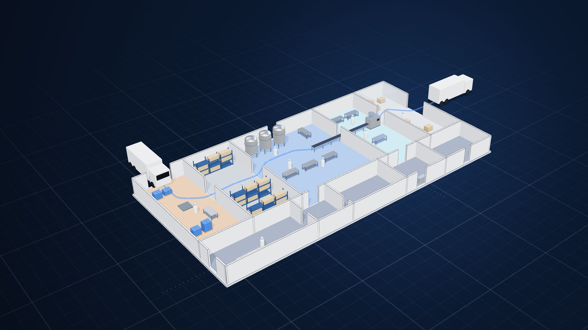

Diseñamos y simulamos tu planta de alimentos antes de construirla.
Consultoría HACCP y diseño de plantas de alimentos en Lima. Implementamos HACCP y BPM listos para DIGESA y dejamos tus registros funcionando en tablet. Un solo equipo, del plano a la auditoría.
De la zona sucia al alto cuidado
Cada área recibe el nivel de higiene que su riesgo exige. Las barreras se definen en el plano, antes de levantar un muro.
Producto, personal y residuos nunca se cruzan
El producto avanza en una sola dirección. El personal entra por vestuarios y esclusas sanitarias. Los residuos salen por su propia puerta.
- Producto: de la recepción al despacho
- Personal: vestuario, esclusa y área
- Residuos: salida independiente
La maqueta se vuelve el plano de tu expediente
Con cotas, áreas y flujos, listo para el diseño de detalle, la validación del plan HACCP y la inspección sanitaria.
Solicitar diagnósticoImplementamos y preparamos para
- HACCP
- BPM
- PGH
- Validación técnica oficial HACCP
- ISO 22000
- FSSC 22000
- BRCGS
Plantas que diseñamos antes de que existieran
Modelos 3D, recorridos y simulaciones de proyectos reales. Mostramos los diseños sin datos del cliente ni de su ubicación.
-
03 Serie café · 4 proyectos
Del grano en cereza al café tostado
Beneficio húmedo, secado en patio y tostado. Plantas para productores y cooperativas, diseñadas en 3D y una de ellas simulada en FlexSim antes de invertir.
Camina por tu planta antes de levantar una pared.
Revisamos flujos, accesos y equipos sobre el modelo 3D, cuando cambiar algo cuesta un clic y no una obra.
Nos llaman cuando hay algo en juego
Casi todas las empresas llegan en uno de estos seis momentos. Elige el tuyo y entra al servicio.
-
01
Ingeniería 3D y simulación
¿Vas a construir, ampliar o remodelar tu planta?
Zonificación higiénica, flujos sin cruces y capacidad medida en FlexSim antes de invertir.
Ver servicio → -
02
Registro sanitario
¿Vas a registrar o renovar un registro sanitario?
Qué alimentos lo necesitan, qué documentos pide DIGESA y cómo se tramita en la VUCE.
Ver la guía → -
03
Regulación sanitaria
¿DIGESA te inspecciona o necesitas PGH o validación HACCP?
Preparamos documentos, planta y equipo para la inspección, que llega sin aviso.
Ver servicio → -
04
Sistemas de gestión
¿Un cliente o una certificadora te exige HACCP, ISO 22000 o BRCGS?
Implementamos el sistema a la medida de tu planta y te acompañamos hasta la auditoría.
Ver servicio → -
05
Transformación digital
¿Tus registros siguen en papel?
Registros BPM y HACCP en tablet, con firma en pantalla, trazabilidad por lote y PDF listo.
Ver servicio → -
06
Auditoría y capacitación
¿Tu equipo necesita capacitación o una auditoría interna?
Programas in-company con diagnóstico técnico y certificado de asistencia.
Ver servicio →
Mira tu planta antes de construirla
Modelamos zonificación higiénica, flujos de personal y producto, y puntos de control. Luego simulamos la producción en FlexSim para encontrar errores y cuellos de botella cuando corregirlos todavía es barato.
- 01Flujos sin crucesProducto crudo, terminado, personal y residuos separados desde el diseño.
- 02Zonificación higiénicaÁreas de alto y bajo riesgo definidas según la normativa.
- 03Capacidad medida, no supuestaCuánto produce cada línea por turno y qué equipo la limita.
¿Qué revisa la autoridad sanitaria en tu planta? Lee la guía: qué pide hoy DIGESA
Solicitar diagnósticoY simulamos la producción en FlexSim
- 376
- jabas de 26 kg llenadas
- 4 410
- kg de café mote a fermentación
- 180
- minutos de operación simulados
Corrida de una planta de beneficio de café: recepción, despulpado, fermentación y llenado.
Registros que se llenan en planta, no en la oficina
Pasamos tus formatos BPM y HACCP a tablet o celular. Cada control queda con hora, responsable y firma, listo para mostrar en una inspección.
- Firma en pantalla con el dedo o con lápiz táctil.
- Trazabilidad por lote: cada etapa ve el lote apenas la anterior lo guarda.
- PDF para el jefe de planta y para la autoridad, sin pasar nada en limpio.
- Funciona en la red de tu planta, aunque falle el internet.
Un método claro, sin sorpresas
Sabes desde el primer día qué se hará, en qué orden y qué recibes al final de cada etapa.
- 01
Diagnóstico
Visita técnica, brechas frente a la norma y plan priorizado.
- 02
Diseño
Layout 3D, flujos y programas prerrequisito a medida.
- 03
Implementación
Documentación, capacitación del equipo y registros digitales.
- 04
Auditoría
Simulacro interno y acompañamiento hasta la auditoría final.
Colegio de Ingenieros del Perú
CIP149723
Ing. Willam Pari Hilasaca
Inocuidad alimentaria y diseño de plantas de alimentos
Rigor normativo, mentalidad de ingeniería
Food Tracking Perú lo dirige el ingeniero Willam Pari Hilasaca, especialista en inocuidad alimentaria. Quien diseña tu planta conoce lo que te pedirán en la inspección y en la validación del plan HACCP, porque es el mismo equipo que te acompaña hasta la auditoría.
Lo que conviene saber antes de empezar
¿Tu pregunta no está aquí? Escríbenos por WhatsApp.
¿Cuánto tiempo tarda la implementación de un sistema HACCP?
Depende del tamaño y complejidad de la empresa. En promedio, una implementación completa de HACCP (documentación, capacitación y validación) toma entre 6 y 12 semanas. Si ya cuentas con documentación previa, el proceso puede ser más rápido. El diagnóstico inicial gratuito nos permite darte un cronograma realista desde el primer día.
¿Cuánto cuesta implementar HACCP o ISO 22000?
El costo depende del tamaño de la empresa, el número de productos y el nivel de documentación previa. Para darte un precio exacto necesitamos hacer el diagnóstico inicial (gratuito) primero. Lo que sí podemos decirte es que implementar HACCP cuesta significativamente menos que una auditoría fallida, multas sanitarias o la pérdida de un contrato con una cadena de supermercados por incumplimiento normativo.
¿Trabajan fuera de Lima?
Sí. Atendemos empresas en todo el Perú: Lima, Callao y provincias. Para proyectos fuera de Lima coordinamos visitas técnicas según el cronograma del proyecto y complementamos el trabajo presencial con reuniones virtuales para optimizar tiempos y costos de desplazamiento.
¿Qué diferencia a Food Tracking Perú de otras consultorías?
Integramos tres capacidades en un solo equipo: (1) implementación de sistemas de gestión de inocuidad listos para auditoría, (2) transformación digital del sistema de calidad, y (3) diseño 3D y simulación de plantas alimentarias antes de construir. Así, quien diseña tu planta conoce los requisitos que te pedirán en la auditoría y en la validación del Plan HACCP.
¿Necesito HACCP si mi empresa es pequeña o mediana?
Sí. Según el Codex Alimentarius y la normativa peruana (DS 007-98-SA y sus modificatorias), las empresas que fabrican alimentos deben implementar sistemas de control de peligros basados en HACCP, independientemente de su tamaño. Además, si vendes a supermercados o grandes cadenas, el HACCP es prácticamente un requisito obligatorio. Adaptamos el sistema al tamaño y complejidad real de tu operación.
¿Trabajan con empresas que recién están empezando?
Sí. Trabajamos tanto con empresas en etapa de diseño de planta (antes de construir) como con empresas ya operativas que necesitan regularizar o certificar su sistema. Para startups del sector alimentos, la ventaja de trabajar con nosotros desde el inicio es que el diseño de la planta ya sale HACCP-ready, evitando costosas modificaciones después de la construcción.
¿Qué incluye el diagnóstico gratuito?
El diagnóstico inicial sin costo incluye una revisión del estado actual de tu sistema de gestión de inocuidad, identificación de brechas respecto a la normativa aplicable, y una propuesta de ruta para alcanzar tus objetivos de certificación o regularización. Es una sesión de 30 a 45 minutos por videollamada o presencial en Lima.
¿Para qué sirve simular mi planta antes de construirla?
Con un modelo de simulación (usamos FlexSim) vemos cómo se comportará la producción real: cuánto produce cada línea por turno, dónde se acumula producto en espera y qué equipo limita la capacidad. Así dimensionas equipos, áreas y personal con datos antes de invertir, y no después de construir.
Cuéntanos de tu planta
Te respondemos en menos de 24 horas hábiles con una propuesta de diagnóstico.
- 952 255 734
- Escribir por WhatsApp
- wparih@gmail.com
- Lima, Perú · atendemos todo el país